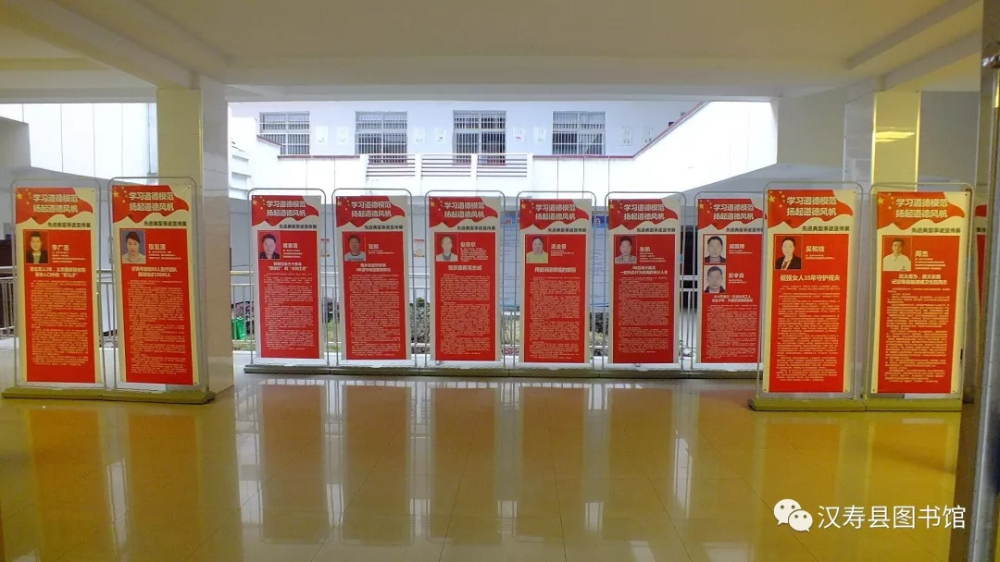

为配合创建省级文明县城，作为城市文化标志的图书馆，充分利用图书馆这一公共文化平台，于2019年04月10日开始，在图书馆藏书大厅主办为期一个月的“十大道德模范先进典型事迹”宣传展览。
图书馆为了主办好“学习道德模范，扬起道德风帆”道德模范先进事迹展览，进行了大量的准备工作，得到了中共汉寿县委宣传部、县文明办的大力支持，提供了本县道德模范人物典型事迹的文字材料和图片，使这次宣传展览活动顺利进行得到了充分保证。
为了配合这次道德模范人物先进典型事迹宣传展览，图书馆在宣传展厅周围，张贴了社会主义核心价值观、讲文明树新风、学雷锋精神争当社会志愿者等宣传牌，营造展览气氛。
据不完全统计，在一个月的道德模范先进典型事迹展览活动中，前来观展人数达2000多人次。